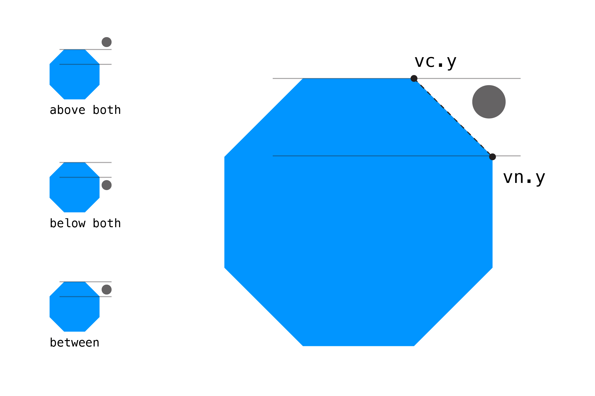

Знання про зіткнення кругів й прямокутників це чудово і часто має сенс спрощувати перевірку для зіткнень зі складнішими формами за допомогою обмежувальних рамок і кіл. Але є задачі, коли ми хочемо більшої точності. На щастя, більшість прикладів, що залишилися, використовують ідеї, які ми вже розглянули, навіть якщо спосіб їх застосування стає складнішим.
У цьому першому прикладі ми перевіримо, чи точка знаходиться у складному багатокутнику. Ми визначимо наш багатокутник за допомогою набору точок з X/Y координатами, які називаються вершинами. Щоб зберегти ці точки, ми будемо використовувати масив об’єктів p5.Vector. Ці вектори просто зберігають координати X/Y (або X/Y/Z). Це спрощує зберігання точок і p5js надає нам через обʼєкти p5.Vector з готовими зручними методами наповненими математикою, яка інакше була б складнішою для використання. Якщо ви раніше не використовували p5.Vector, перш ніж продовжити ви можете прочитати першу частину розділу про вектори у онлайн-книзі Природа Коду.
Спочатку ми створимо масив для майбутніх чотирьох обʼєктів p5.Vector, по одному для кожного кута нашого багатокутника:
let vertices = [];
Тепер створимо самі вектори з конкретними XY значеннями для позицій вершин. Тут ми малюємо трапецію як у прикладі на початку сторінки, але ви можете створити складніші форми або навіть розподілити точки випадковим чином.
vertices[0] = createVector(200, 100);
vertices[1] = createVector(400, 130);
vertices[2] = createVector(350, 300);
vertices[3] = createVector(250, 300);
Для перевірки наявності колізії, ми заведемо окрему змінну для зберігання логічного значення. Пізніше ця змінна буде всередині нашої функції.
let isCollision = false;
Далі потрібно перебрати усі вершини багатокутника одна за одною. Для цього ми використовуємо цикл for зі змінною current. Але нам також потрібна наступна вершина зі списку, щоб ми могли сформувати лінію (сторону багатокутника). Для цього ми використовуємо другу змінну під назвою next. Ці змінні зберігатимуть потрібні індекси масиву. Ось як виглядає цикл:
let next = 0;
for (let current = 0; current < vertices.length; current++) {
// отримання наступної вершини зі списку
next = current + 1;
// коли дійшли до останньої вершини, беремо першу під індексом 0
if (next === vertices.length) {
next = 0;
}
}
Тоді ми можемо використати змінні current і next для отримання векторів з нашого масиву:
const vc = vertices[current]; // c для "current"
const vn = vertices[next]; // n для "next"
Тепер щодо оператора if. Ми можемо отримати доступ до XY координат кожної вершини за допомогою синтаксису vc.x і vc.y. Ця умова оператора досить складна, тому поки що запишемо її повністю як є, а потім розібʼємо на частини:
if (((vc.y > py) != (vn.y > py)) && (px < (vn.x-vc.x) * (py-vc.y) / (vn.y-vc.y) + vc.x)) {
isCollision = !isCollision;
}
Тут відбуваються дві перевірки. Перша перевіряє, чи знаходиться точка між двома вершинами в напрямку Y:
(vc.y >= py && vn.y < py) || (vc.y < py && vn.y >= py)
Ми перевіряємо, чи знаходиться точка або вище vc.y або нижче vn.y, або нижче vc.y і вище vn.y. Ось як це виглядає візуально:

Примітка: якщо вам до вподоби, то існує більш лаконічний спосіб написання цього if-оператора:
(vc.y > py) != (vn.y > py)
Це трохи неявно: код виконує ту саму перевірку, але повертає true лише якщо обидві перевірки не збігаються одна з одному!
Далі — складніша перевірка. Вона заснована на теоремі Жордана, яка включає складну математику, тому ми пропустимо її пояснення. (Якщо ви розумієте, як працює цей алгоритм, дайте мені знати!)
px < (vn.x-vc.x) * (py-vc.y) / (vn.y-vc.y) + vc.x
Якщо обидві перевірки правдиві, ми змінюємо значення isCollision на її протилежне значення. Це відрізняється від наших попередніх перевірок, де ми встановлювали значення змінної для результату колізії просто на true або false. Під час перебору всіх вершин змінна isCollision може змінювати своє значення декілька раз, але в результаті матиме фінальне потрібне значення.
// зміна булевої змінної 'isCollision' на протилежне значення
isCollision = !isCollision;
Ось повний приклад з усім кодом разом:
// змінні для положення точки
let px = 0;
let py = 0;
// масив векторів p5js, по одному для кожної вершини багатокутника
let vertices = [];
function setup() {
createCanvas(window.innerWidth, window.innerHeight);
strokeWeight(15); // збільшена жирність, щоб краще бачити точку
noCursor();
// встановлення координат вершин
// тут ми малюємо трапецію, але ви можете створити складніші фігури
vertices[0] = createVector(width / 2 - 100, height / 2 - 100);
vertices[1] = createVector(width / 2 + 100, height / 2 - 100);
vertices[2] = createVector(width / 2 + 50, height / 2 + 100);
vertices[3] = createVector(width / 2 - 50, height / 2 + 100);
}
function draw() {
background(255);
// оновлення координат точки координатами курсора
px = mouseX;
py = mouseY;
// результат перевірки на зіткнення
const isHit = isPolyWithPointCollides(vertices, px, py);
// при зіткненні змінюємо колір
if (isHit) {
fill(255, 150, 0);
} else {
fill(0, 150, 255);
}
// малювання багатокутника з beginShape() та відповідними вершинами
noStroke();
beginShape();
for (const v of vertices) {
vertex(v.x, v.y);
}
endShape();
// малювання рухомої точки
stroke(0, 150);
point(px, py);
}
// перевірка на перетин між багатокутником та точкою
function isPolyWithPointCollides(vertices, px, py) {
let isCollision = false;
// перебір кожної вершини з використанням наступної вершини в списку
let next = 0;
for (let current = 0; current < vertices.length; current++) {
// отримання наступної вершини зі списку
next = current + 1;
// коли дійшли до останньої вершини, беремо першу під індексом 0
if (next === vertices.length) {
next = 0;
}
// отримуємо p5.Vector у нашій поточній позиції
// це зробить наш оператор if трохи чистішим
const vc = vertices[current]; // c для "current" (поточний)
const vn = vertices[next]; // n для "next" (наступний)
// здійснити перевірку та за потреби інвертувати змінну 'isCollision'
if (((vc.y >= py && vn.y < py) || (vc.y < py && vn.y >= py)) &&
(px < (vn.x - vc.x) * (py - vc.y) / (vn.y - vc.y) + vc.x)) {
isCollision = !isCollision;
}
}
return isCollision;
}
Ця функція розроблена для роботи з будь-якою кількістю вершин, тому вона може обробляти дуже складні форми! Однак чим більше вершин ви перевіряєте, тим повільнішою буде функція. Якщо ви хочете використати її у повноцінній динамічній грі, навіть кілька з таких перевірок на складних формах можуть сповільнити вашу гру. Збалансуйте потребу в точності та швидкості: все, що здається інтуїтивно зрозумілим, імовірно, є правильним шляхом.
Приклад колізії цього розділу базується на цій відповіді nirg і Pranav на StackOverflow .
Далі: Прямокутник і Круг